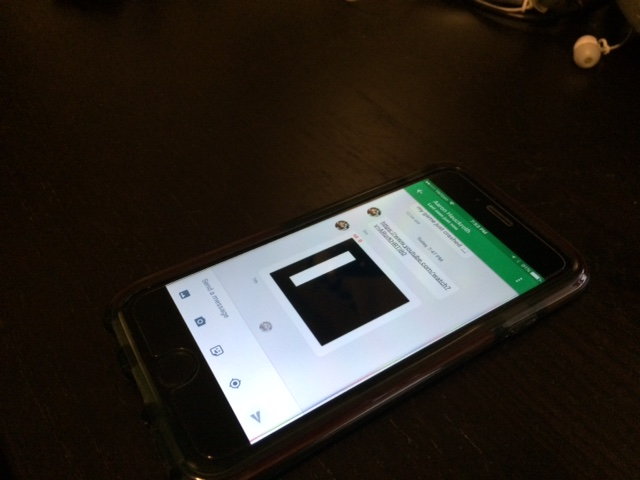
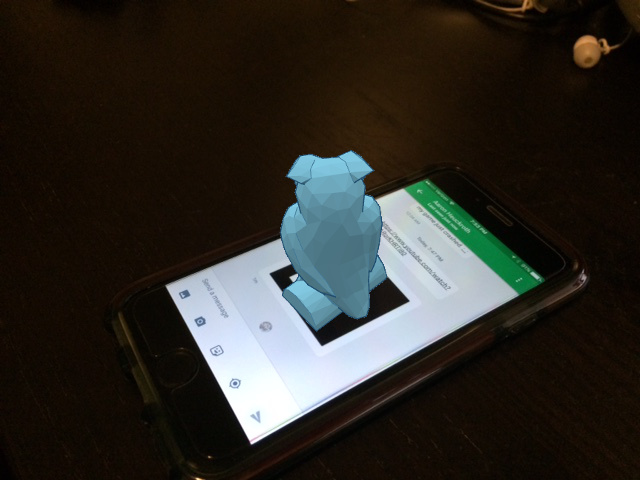
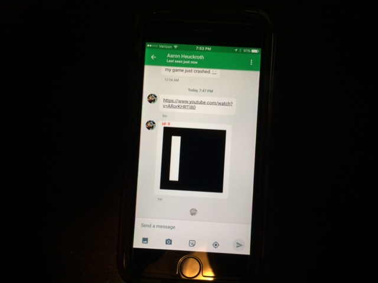
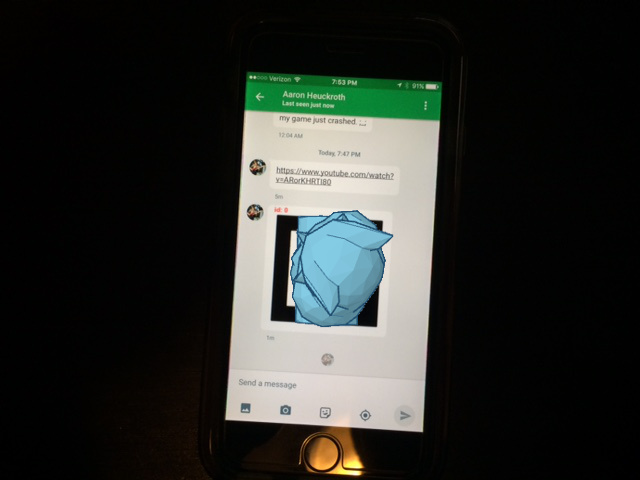
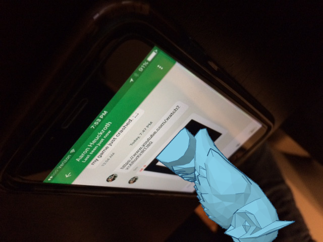

Problem Definition
Augmented reality applications alter a user's perceptions of the physical world around them using computer-generated sensory information. This information can be used to give the user the impression of virtual objects interacting with physical space. Emerging technologies like Google Glass and the Microsoft Hololens have exciting applications in entertainment, design, and education, are raising public awareness of the possibilities augmented reality.
One popular concept is the idea of overlaying synthetic visuals over the user's vision, which are intended to appear as if they exist in the three-dimensional space around them. To do this correctly, an augmented reality application must...
- Gather information about the world around the user.
- Determine the correct position, and orientation of the virtual object to be displayed.
- Generate the desired visuals.
- Overlay the generated visuals onto the user's vision.
Though we can't yet render directly into a user's vision, we can approximate this process by drawing the virtual object onto an image or video sequence before displaying it to the user.
The process of processing a 2D object and computing its spatial properties in 3D is called Pose Estimation. By analyzing the appearance of a known object in 2D, we can compute its 3D position and orientation, and use this information to determine how and where a virtual object should be rendered.
Our project aims to create a system which will use pose estimation to render a 3D object onto a flat surface in a 2D image such that it appears to exist in physical space.
Method and Implementation
Input Images and Expected Results
Below are some sample images which show a cell phone rendering a standardized augmented reality marker, which was generated by this GitHub project. The images were taken at a variety of angles and distances from the marker, to test the performance of our solution under different conditions.
The composite images were created by taking a 3D model of a virtual object, rendering it in Tinkercad, and aligning it with a 3D model of the 2D marker.
The orientation and position of the camera was then adjusted until the marker appeared as it does in each input image, and a screenshot of the rendered 3D object was saved. These 2D renderings were then manually composited with the input images so as to make it look like the virtual object is "standing" on the surface of the cell phone.
| |
|
|  |  |
 |
 |
|  |  |
 |
 |
 |
 |
Discussion
Discuss your method and results:
- What are the strengths and weaknesses of your method?
- Do your results show that your method is generally successful or are there limitations? Describe what you expected to find in your experiments, and how that differed or was confirmed by your results.
- Potential future work. How could your method be improved? What would you try (if you had more time) to overcome the failures/limitations of your work?
Conclusions
Based on your discussion, what are your conclusions? What is your main message?
Credits and Bibliography
Cite any papers or other references you consulted while developing your solution. Citations to papers should include the authors, the year of publication, the title of the work, and the publication information (e.g., book name and publisher; conference proceedings and location; journal name, volume and pages; technical report and institution). Material on the web should include the url and date of access.
Credit any joint work or discussions with your classmates.